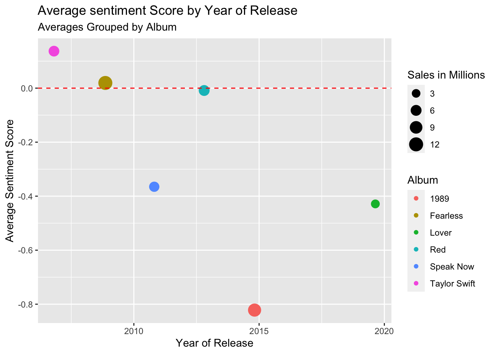

b_lyrics <- readr::read_csv('https://raw.githubusercontent.com/rfordatascience/tidytuesday/master/data/2020/2020-09-29/beyonce_lyrics.csv')
ts_lyrics <- readr::read_csv('https://raw.githubusercontent.com/rfordatascience/tidytuesday/master/data/2020/2020-09-29/taylor_swift_lyrics.csv')
sales <- readr::read_csv('https://raw.githubusercontent.com/rfordatascience/tidytuesday/master/data/2020/2020-09-29/sales.csv')Data Analysis Project
Question
We will explore album sales and lyrics from two artists (Beyoncé and Taylor Swift), The data are available from TidyTuesday from September 2020. we want to know, is music getting sadder and angrier, and overall more negative in these artists’ music? And how might that affect album sales, if at all?
There have been studies done about how music is getting more negative (Lawrence Technological University 2019). Is it possible that this could also be affecting album sales? We will look at T Swift and Queen Bee to see if there is some evidence that their music is more negative over time. We will also consider if it affects album sales.
Intended Audience
This was a homework for 140.776 Statistical Computing in fall 2022. This could be useful for the general public that is interested in studying album sales of artists and their possible relation to the lyrics in the songs on the albums.
Data
The datasets for this part of the assignment comes from TidyTuesday.
Data dictionary avaialble here:
library(here)
if(!file.exists(here("data","b_lyrics.RDS"))){
b_lyrics <- readr::read_csv('https://raw.githubusercontent.com/rfordatascience/tidytuesday/master/data/2020/2020-09-29/beyonce_lyrics.csv')
ts_lyrics <- readr::read_csv('https://raw.githubusercontent.com/rfordatascience/tidytuesday/master/data/2020/2020-09-29/taylor_swift_lyrics.csv')
sales <- readr::read_csv('https://raw.githubusercontent.com/rfordatascience/tidytuesday/master/data/2020/2020-09-29/sales.csv')
# save the files to RDS objects
saveRDS(b_lyrics, file = here("data","b_lyrics.RDS"))
saveRDS(ts_lyrics, file = here("data","ts_lyrics.RDS"))
saveRDS(sales, file = here("data","sales.RDS"))
}b_lyrics <- readRDS(here("data","b_lyrics.RDS"))
ts_lyrics <- readRDS(here("data","ts_lyrics.RDS"))
sales <- readRDS(here("data","sales.RDS"))Data Wrangling
# Use `lubridate` to create a column called `released` that is a `Date` class. However, to be able to do this, you first need to use `stringr` to search for pattern that matches things like this "(US)\[51\]" in a string like this "September 1, 2006 (US)\[51\]" and removes them. (**Note**: to get full credit, you must create the regular expression).
# Use `forcats` to create a factor called `country` (**Note**: you may need to collapse some factor levels).
sales <- readRDS(here("data","sales.RDS"))
library(tidyverse)── Attaching packages ─────────────────────────────────────── tidyverse 1.3.2 ──
✔ ggplot2 3.3.6 ✔ purrr 0.3.4
✔ tibble 3.1.8 ✔ dplyr 1.0.9
✔ tidyr 1.2.1 ✔ stringr 1.4.1
✔ readr 2.1.2 ✔ forcats 0.5.2
── Conflicts ────────────────────────────────────────── tidyverse_conflicts() ──
✖ dplyr::filter() masks stats::filter()
✖ dplyr::lag() masks stats::lag()library(stringr)
library(lubridate)
Attaching package: 'lubridate'
The following objects are masked from 'package:base':
date, intersect, setdiff, unionsales$released <- str_remove_all(string=sales$released, pattern = "(US)|(UK)|[\\[\\]\\(\\)]|(39)|(51)")
sales <- sales %>%
mutate(released=mdy(released)) %>%
mutate(country = as.factor(country)) %>%
mutate(country = fct_collapse(country,
World = c("WW", "World"),
FR = c("FR", "FRA")
))#Transform the `sales` into a unit that is album sales in millions of dollars.
sales$sales <- as.numeric(sales$sales)/1000000#Keep only album sales from the UK, the US or the World.
#Auto print your final wrangled tibble data frame.
salesdf <- sales %>%
filter(country == "UK"|country == "US"| country == "World")
salesdf# A tibble: 36 × 8
artist title country sales released re_release label formats
<chr> <chr> <fct> <dbl> <date> <chr> <chr> <chr>
1 Taylor Swift Taylor Swift US 5.72 2006-10-24 March 18, … Big … CD, CD…
2 Taylor Swift Fearless World 12 2008-11-11 October 27… Big … CD, CD…
3 Taylor Swift Fearless US 7.18 2008-11-11 October 27… Big … CD, CD…
4 Taylor Swift Fearless UK 0.609 2008-11-11 October 27… Big … CD, CD…
5 Taylor Swift Speak Now World 5 2010-10-25 <NA> Big … CD, CD…
6 Taylor Swift Speak Now US 4.69 2010-10-25 <NA> Big … CD, CD…
7 Taylor Swift Speak Now UK 0.169 2010-10-25 <NA> Big … CD, CD…
8 Taylor Swift Red World 6 2012-10-22 <NA> Big … CD, CD…
9 Taylor Swift Red US 4.46 2012-10-22 <NA> Big … CD, CD…
10 Taylor Swift Red UK 0.693 2012-10-22 <NA> Big … CD, CD…
# … with 26 more rowsIn this section, we will do some more data wrangling followed by summarization using wrangled data from Part 1A.
# Keep only album sales from the US.
sales1 <- sales %>%
filter(country == "US")#Create a new column called `years_since_release` corresponding to the number of years since the release of each album from Beyoncé and Taylor Swift. This should be a whole number and you should round down to "14" if you get a non-whole number like "14.12" years. (**Hint**: you may find the `interval()` function from `lubridate` helpful here, but this is not the only way to do this.)
sales1 <- sales %>%
mutate(years_since_release=(year(Sys.Date())-year(released)))#Calculate the most recent, oldest, and the median years since albums were released for both Beyoncé and Taylor Swift.
sales1 %>%
filter(artist=="Taylor Swift")%>%
summarize(median = median(years_since_release),
recent = min(years_since_release),
oldest = max(years_since_release))# A tibble: 1 × 3
median recent oldest
<dbl> <dbl> <dbl>
1 8 2 16sales1 %>%
filter(artist=="Beyoncé")%>%
summarize(median = median(years_since_release),
recent = min(years_since_release),
oldest = max(years_since_release))# A tibble: 1 × 3
median recent oldest
<dbl> <dbl> <dbl>
1 12.5 6 19#Calculate the total album sales for each artist and for each `country` (only sales from the UK, US, and World).
sales2 <- sales %>%
filter(country == "UK"|country == "US"| country == "World")%>%
group_by(artist, country) %>%
summarize(total = sum(sales))`summarise()` has grouped output by 'artist'. You can override using the
`.groups` argument.sales2# A tibble: 6 × 3
# Groups: artist [2]
artist country total
<chr> <fct> <dbl>
1 Beyoncé UK 5.24
2 Beyoncé US 17.7
3 Beyoncé World 34.5
4 Taylor Swift UK 3.32
5 Taylor Swift US 31.7
6 Taylor Swift World 40.8 Plots
#Using the total album sales, create a [percent stacked barchart](https://r-graph-gallery.com/48-grouped-barplot-with-ggplot2) using `ggplot2` of the percentage of sales of studio albums (in millions) along the y-axis for the two artists along the x-axis colored by the `country`.
ggplot(sales2,aes(fill=artist, y=total, x=country)) +
geom_bar(position="fill", stat="identity") +
ggtitle(label = "ALbum Sales",
subtitle = "As a Percentage by Artist Seperated by Country") +
xlab("Country") +
ylab("Precentage of Sales")+
scale_fill_discrete(name = "Artist")knitr::kable(
sales2[1:6, 1:3]
)| artist | country | total |
|---|---|---|
| Beyoncé | UK | 5.237000 |
| Beyoncé | US | 17.656000 |
| Beyoncé | World | 34.500000 |
| Taylor Swift | UK | 3.320935 |
| Taylor Swift | US | 31.659000 |
| Taylor Swift | World | 40.800000 |
#Using the wrangled data from Part 1A, use `ggplot2` to create a bar plot for the sales of studio albums (in millions) along the x-axis for each of the album titles along the y-axis.
sales3 <- sales %>%
filter(country == "World")#ggplot(sales, aes(fill=artist, y=title, x=sales)) +
#geom_bar(position="dodge", stat="identity")
sales3 %>%
ggplot(aes(fill = artist, y = fct_reorder(title,
sales), x= sales))+
geom_bar(position="dodge", stat="identity")+
labs(x="Sales in Millions", y= "Album Title", title="Sales in Millions", subtitle = "By Album Title and Artist")+
scale_fill_discrete(name = "Artist")+
theme(axis.text.y = element_text(angle = 45))
#Using the wrangled data from Part 1A, use `ggplot2` to create a scatter plot of sales of studio albums (in millions) along the y-axis by the released date for each album along the x-axis.
sales %>%
filter(country == "UK"|country == "US"| country == "World")%>%
ggplot(aes(x=released, y=sales, color=artist)) +
geom_point() +
facet_grid(country ~ .)+
labs(x="Year of Release", y= "Sales in Millions", title="Sales in Millions by Year of Release", subtitle = "Faceted by Country", color = "Artist")
Exploring sentiment of lyrics
#Using `ts_lyrics`, create a new column called `line` with one line containing the character string for each line of Taylor Swift's songs.
b_lyrics <- readRDS(here("data","b_lyrics.RDS"))
ts_lyrics <- readRDS(here("data","ts_lyrics.RDS"))
library(tidyverse)
library(stringr)
library(tidytext)
ts_lyrics# A tibble: 132 × 4
Artist Album Title Lyrics
<chr> <chr> <chr> <chr>
1 Taylor Swift Taylor Swift Tim McGraw "He said the way my blu…
2 Taylor Swift Taylor Swift Picture to Burn "State the obvious, I d…
3 Taylor Swift Taylor Swift Teardrops on my Guitar "Drew looks at me,\nI f…
4 Taylor Swift Taylor Swift A Place in This World "I don't know what I wa…
5 Taylor Swift Taylor Swift Cold As You "You have a way of comi…
6 Taylor Swift Taylor Swift The Outside "I didn't know what I w…
7 Taylor Swift Taylor Swift Tied Together With A Smile "Seems the only one who…
8 Taylor Swift Taylor Swift Stay Beautiful "Cory's eyes are like a…
9 Taylor Swift Taylor Swift Should’ve Said No "It's strange to think …
10 Taylor Swift Taylor Swift Mary’s Song "She said\n\"I was seve…
# … with 122 more rowsb_lyrics# A tibble: 22,616 × 6
line song_id song_…¹ artis…² artis…³ song_…⁴
<chr> <dbl> <chr> <dbl> <chr> <dbl>
1 If I ain't got nothing, I got you 50396 1+1 498 Beyoncé 1
2 If I ain't got something, I don't gi… 50396 1+1 498 Beyoncé 2
3 'Cause I got it with you 50396 1+1 498 Beyoncé 3
4 I don't know much about algebra, but… 50396 1+1 498 Beyoncé 4
5 And it's me and you 50396 1+1 498 Beyoncé 5
6 That's all we'll have when the world… 50396 1+1 498 Beyoncé 6
7 'Cause baby, we ain't got nothing wi… 50396 1+1 498 Beyoncé 7
8 Darling, you got enough for the both… 50396 1+1 498 Beyoncé 8
9 So come on, baby, make love to me 50396 1+1 498 Beyoncé 9
10 When my days look low 50396 1+1 498 Beyoncé 10
# … with 22,606 more rows, and abbreviated variable names ¹song_name,
# ²artist_id, ³artist_name, ⁴song_line#Using `ts_lyrics`, create a new column called `line` with one line containing the character string for each line of Taylor Swift's songs.
#For full credit, show all the rows in `ts_lyrics` that have "hello" in the `line` column and report how many rows there are in total.
#How many lines in Taylor Swift's lyrics contain the word "goodbye"? For full credit, show all the rows in `ts_lyrics` that have "goodbye" in the `line` column and report how many rows there are in total.
b_lyrics <- readRDS(here("data","b_lyrics.RDS"))
ts_lyrics <- readRDS(here("data","ts_lyrics.RDS"))
library(tidyverse)
library(stringr)
library(tidytext) ts_lyrics_df = separate_rows(ts_lyrics, Lyrics, sep = '\n') %>%
rename(line = Lyrics) %>%
mutate(song_line = row_number()) %>%
mutate(hello_ind = ifelse(grepl(pattern = "hello", x = line, ignore.case = TRUE),1,0)) %>%
filter(hello_ind == 1)
ts_lyrics_df# A tibble: 6 × 6
Artist Album Title line song_…¹ hello…²
<chr> <chr> <chr> <chr> <int> <dbl>
1 Taylor Swift Fearless Love Story "And say, \"Hell… 932 1
2 Taylor Swift Red I Almost Do "That I can't sa… 2711 1
3 Taylor Swift Red Everything Has Changed "'Cause all I kn… 3040 1
4 Taylor Swift Red Everything Has Changed "'Cause all I kn… 3059 1
5 Taylor Swift Red Everything Has Changed "All I know is w… 3074 1
6 Taylor Swift Red Everything Has Changed "All I know is w… 3082 1
# … with abbreviated variable names ¹song_line, ²hello_indnrow(ts_lyrics_df)[1] 6ts_lyrics_df1 = separate_rows(ts_lyrics, Lyrics, sep = '\n') %>%
rename(line = Lyrics) %>%
mutate(song_line = row_number()) %>%
mutate(goodbye_ind = ifelse(grepl(pattern = "goodbye", x = line, ignore.case = TRUE),1,0)) %>%
filter(goodbye_ind == 1)
ts_lyrics_df1# A tibble: 12 × 6
Artist Album Title line song_…¹ goodb…²
<chr> <chr> <chr> <chr> <int> <dbl>
1 Taylor Swift Taylor Swift Tied Together With A Smile "Goodby… 273 1
2 Taylor Swift Speak Now Mine "Braced… 1457 1
3 Taylor Swift Speak Now Back to December "You ga… 1547 1
4 Taylor Swift Speak Now Long Live "And fo… 2154 1
5 Taylor Swift Red I Almost Do "And ri… 2712 1
6 Taylor Swift Red Come Back Be Here "Stumbl… 3243 1
7 Taylor Swift 1989 All You Had to Do Was Stay "But pe… 3639 1
8 Taylor Swift reputation Getaway Car "Said g… 4908 1
9 Taylor Swift reputation Getaway Car "Said g… 4916 1
10 Taylor Swift Lover Death By A Thousand Cuts "Saying… 5817 1
11 Taylor Swift Lover Death By A Thousand Cuts "'Cause… 5837 1
12 Taylor Swift Lover Daylight "I'll t… 6222 1
# … with abbreviated variable names ¹song_line, ²goodbye_indnrow(ts_lyrics_df1)[1] 12b_lyrics_df = b_lyrics %>%
mutate(hello_ind = ifelse(grepl(pattern = "hello", x = line, ignore.case = TRUE),1,0)) %>%
filter(hello_ind == 1)
b_lyrics_df# A tibble: 91 × 7
line song_id song_…¹ artis…² artis…³ song_…⁴ hello…⁵
<chr> <dbl> <chr> <dbl> <chr> <dbl> <dbl>
1 Hello world, well I just bou… 2220711 "Dream… 498 Beyoncé 5 1
2 Hello Stevie, How you feeling 1981227 "Finge… 498 Beyoncé 6 1
3 Fellow great Americans, hello 2715227 "FREED… 498 Beyoncé 52 1
4 You had me at hello (Hello) 80249 "Hello" 498 Beyoncé 15 1
5 Hello (Hello) 80249 "Hello" 498 Beyoncé 16 1
6 Hello (Hello) 80249 "Hello" 498 Beyoncé 17 1
7 You had me at hello (Hello) 80249 "Hello" 498 Beyoncé 18 1
8 Hello (Hello) 80249 "Hello" 498 Beyoncé 19 1
9 Hello (Hello) 80249 "Hello" 498 Beyoncé 20 1
10 'Cause you had me at hello (… 80249 "Hello" 498 Beyoncé 24 1
# … with 81 more rows, and abbreviated variable names ¹song_name, ²artist_id,
# ³artist_name, ⁴song_line, ⁵hello_indnrow(b_lyrics_df)[1] 91b_lyrics_df1 = b_lyrics %>%
mutate(goodbye_ind = ifelse(grepl(pattern = "goodbye", x = line, ignore.case = TRUE),1,0)) %>%
filter(goodbye_ind == 1)
b_lyrics_df1# A tibble: 12 × 7
line song_id song_…¹ artis…² artis…³ song_…⁴ goodb…⁵
<chr> <dbl> <chr> <dbl> <chr> <dbl> <dbl>
1 We only said goodbye with wo… 139043 Back t… 498 Beyoncé 12 1
2 We only said goodbye with wo… 139043 Back t… 498 Beyoncé 21 1
3 We only said goodbye with wo… 139043 Back t… 498 Beyoncé 24 1
4 Thank God, I found the good … 51492 Best T… 498 Beyoncé 38 1
5 Thank God, I found the good … 1946060 Best T… 498 Beyoncé 42 1
6 Thank God, I found the good … 4241137 Best T… 498 Beyoncé 38 1
7 It's so hard to say goodbye 435491 Gift f… 498 Beyoncé 23 1
8 I never want to say goodbye 435491 Gift f… 498 Beyoncé 24 1
9 I never, ever want to say go… 435491 Gift f… 498 Beyoncé 25 1
10 We've got to say goodbye 1844620 Hard T… 498 Beyoncé 29 1
11 Don't have to say goodbye 1224115 Slow L… 498 Beyoncé 42 1
12 Somewhere between hi and goo… 141848 Yes 498 Beyoncé 27 1
# … with abbreviated variable names ¹song_name, ²artist_id, ³artist_name,
# ⁴song_line, ⁵goodbye_indnrow(b_lyrics_df1)[1] 12#Using the `b_lyrics` dataset,
#Tokenize each lyrical line by words.
#Remove the "stopwords".
#Calculate the total number for each word in the lyrics.
#Using the "bing" sentiment lexicon, add a column to the summarized data frame adding the "bing" sentiment lexicon.
#Sort the rows from most frequent to least frequent words.
#Only keep the top 25 most frequent words.
#Auto print the wrangled tibble data frame.
#Use `ggplot2` to create a bar plot with the top words on the y-axis and the frequency of each word on the x-axis. Color each bar by the sentiment of each word from the "bing" sentiment lexicon. Bars should be ordered from most frequent on the top to least frequent on the bottom of the plot.
#Create a word cloud of the top 25 most frequent words.
b_lyrics_df2 = tibble(text = b_lyrics$line)
b_lyrics_df2n <- b_lyrics_df2 %>%
unnest_tokens(output = word,
input = text,
token="words") %>%
anti_join(stop_words)%>%
count(word, sort = TRUE) Joining, by = "word"b_lyrics_df2n# A tibble: 5,937 × 2
word n
<chr> <int>
1 love 1362
2 baby 1024
3 girl 592
4 wanna 564
5 hey 499
6 boy 494
7 yeah 491
8 feel 488
9 time 452
10 uh 408
# … with 5,927 more rowsb_lyrics_df2n <- b_lyrics_df2n %>%
inner_join(get_sentiments("bing"))%>%
slice(1:25)Joining, by = "word"b_lyrics_df2n# A tibble: 25 × 3
word n sentiment
<chr> <int> <chr>
1 love 1362 positive
2 crazy 308 negative
3 top 241 positive
4 bad 132 negative
5 beautiful 131 positive
6 whoa 121 positive
7 damn 106 negative
8 hurt 90 negative
9 hard 87 negative
10 ready 85 positive
# … with 15 more rowsb_lyrics_df2n %>%
slice(1:25) %>%
ggplot(aes(fill = sentiment, y = fct_reorder(word,
n), x= n))+
geom_bar(position="dodge", stat="identity")+
labs(x="Frequency of Word", y= "Sentiment Word", title="Sentiment Word Frequency")+
scale_fill_discrete(name = "Sentiment")
Wordcloud
library(wordcloud)Loading required package: RColorBrewerb_lyrics_df2n %>%
slice(1:25) %>%
with(wordcloud(word, n))ts_lyrics <- readRDS(here("data","ts_lyrics.RDS"))
ts_lyrics1 = separate_rows(ts_lyrics, Lyrics, sep = '\n') %>%
rename(line = Lyrics) %>%
mutate(song_line = row_number())
ts_lyrics_df2 = tibble(text = ts_lyrics1$line)
ts_lyrics_df2 <- ts_lyrics_df2 %>%
unnest_tokens(output = word,
input = text,
token="words") %>%
anti_join(stop_words)%>%
count(word, sort = TRUE) Joining, by = "word"ts_lyrics_df2# A tibble: 2,579 × 2
word n
<chr> <int>
1 love 248
2 time 225
3 wanna 158
4 baby 153
5 ooh 127
6 yeah 105
7 stay 100
8 gonna 98
9 night 96
10 bad 80
# … with 2,569 more rowsts_lyrics_df2 <- ts_lyrics_df2 %>%
inner_join(get_sentiments("bing"))%>%
slice(1:25)Joining, by = "word"ts_lyrics_df2# A tibble: 25 × 3
word n sentiment
<chr> <int> <chr>
1 love 248 positive
2 bad 80 negative
3 shake 73 negative
4 break 59 negative
5 mad 48 negative
6 beautiful 46 positive
7 smile 45 positive
8 hate 44 negative
9 fall 43 negative
10 whoa 36 positive
# … with 15 more rowsts_lyrics_df2 %>%
slice(1:25) %>%
ggplot(aes(fill = sentiment, y = fct_reorder(word,
n), x= n))+
geom_bar(position="dodge", stat="identity")+
labs(x="Frequency of Word", y= "Sentiment Word", title="Sentiment Word Frequency", subtitle = "Categorized by negative and positive sentiments")+
scale_fill_discrete(name = "Sentiment")
library(wordcloud)
ts_lyrics_df2 %>%
slice(1:25) %>%
with(wordcloud(word, n))# Using the `ts_lyrics` dataset,
# Tokenize each lyrical line by words.
# Remove the "stopwords".
# Calculate the total number for each word in the lyrics **for each Album**.
# Using the "afinn" sentiment lexicon, add a column to the summarized data frame adding the "afinn" sentiment lexicon.
# Calculate the average sentiment score **for each Album**.
# Auto print the wrangled tibble data frame.
ts_lyrics <- readRDS(here("data","ts_lyrics.RDS"))
library(textdata)ts_lyrics2 = separate_rows(ts_lyrics, Lyrics, sep = '\n') %>%
rename(line = Lyrics)
ts_lyrics_df3 = tibble(Album = ts_lyrics2$Album, line= ts_lyrics2$line)
ts_lyrics_df3 <- ts_lyrics_df3 %>%
group_by(Album)
ts_lyrics_df3# A tibble: 7,168 × 2
# Groups: Album [8]
Album line
<chr> <chr>
1 Taylor Swift "He said the way my blue eyes shinx"
2 Taylor Swift "Put those Georgia stars to shame that night"
3 Taylor Swift "I said: \"That's a lie.\""
4 Taylor Swift "Just a boy in a Chevy truck"
5 Taylor Swift "That had a tendency of gettin' stuck"
6 Taylor Swift "On back roads at night"
7 Taylor Swift "And I was right there beside him all summer long"
8 Taylor Swift "And then the time we woke up to find that summer had gone"
9 Taylor Swift "But when you think \"Tim McGraw\""
10 Taylor Swift "I hope you think my favorite song"
# … with 7,158 more rowsts_lyrics_df3 <- ts_lyrics_df3 %>%
unnest_tokens(output = word,
input = line,
token="words") %>%
anti_join(stop_words)%>%
count(word, sort = TRUE) Joining, by = "word"ts_lyrics_df3# A tibble: 4,968 × 3
# Groups: Album [8]
Album word n
<chr> <chr> <int>
1 1989 love 82
2 1989 shake 70
3 Red time 66
4 Lover ooh 61
5 Red uh 50
6 Red red 46
7 Lover love 44
8 Lover wanna 42
9 1989 baby 41
10 Lover daylight 40
# … with 4,958 more rows# Join the wrangled data frame from Part 1A (album sales in millions) with the wrangled data frame from #6 above (average sentiment score for each album).
ts_lyrics_df3 <- ts_lyrics_df3 %>%
inner_join(get_sentiments("afinn")) Joining, by = "word"ts_lyrics_df3 <- ts_lyrics_df3 %>%
group_by(Album)%>%
summarise(average = mean(value))
ts_lyrics_df3# A tibble: 8 × 2
Album average
<chr> <dbl>
1 1989 -0.822
2 Fearless 0.0192
3 folklore -0.613
4 Lover -0.429
5 Red -0.00870
6 reputation -0.495
7 Speak Now -0.365
8 Taylor Swift 0.137 salesdf <- salesdf %>%
rename(Album = title)salesdf# A tibble: 36 × 8
artist Album country sales released re_release label formats
<chr> <chr> <fct> <dbl> <date> <chr> <chr> <chr>
1 Taylor Swift Taylor Swift US 5.72 2006-10-24 March 18, … Big … CD, CD…
2 Taylor Swift Fearless World 12 2008-11-11 October 27… Big … CD, CD…
3 Taylor Swift Fearless US 7.18 2008-11-11 October 27… Big … CD, CD…
4 Taylor Swift Fearless UK 0.609 2008-11-11 October 27… Big … CD, CD…
5 Taylor Swift Speak Now World 5 2010-10-25 <NA> Big … CD, CD…
6 Taylor Swift Speak Now US 4.69 2010-10-25 <NA> Big … CD, CD…
7 Taylor Swift Speak Now UK 0.169 2010-10-25 <NA> Big … CD, CD…
8 Taylor Swift Red World 6 2012-10-22 <NA> Big … CD, CD…
9 Taylor Swift Red US 4.46 2012-10-22 <NA> Big … CD, CD…
10 Taylor Swift Red UK 0.693 2012-10-22 <NA> Big … CD, CD…
# … with 26 more rowsts_lyrics_df3# A tibble: 8 × 2
Album average
<chr> <dbl>
1 1989 -0.822
2 Fearless 0.0192
3 folklore -0.613
4 Lover -0.429
5 Red -0.00870
6 reputation -0.495
7 Speak Now -0.365
8 Taylor Swift 0.137 dataf <- inner_join(ts_lyrics_df3, salesdf, 'Album')
dataf# A tibble: 16 × 9
Album average artist country sales released re_re…¹ label formats
<chr> <dbl> <chr> <fct> <dbl> <date> <chr> <chr> <chr>
1 1989 -0.822 Taylor… World 10.1 2014-10-27 <NA> Big … CD, CD…
2 1989 -0.822 Taylor… US 6.22 2014-10-27 <NA> Big … CD, CD…
3 1989 -0.822 Taylor… UK 1.25 2014-10-27 <NA> Big … CD, CD…
4 Fearless 0.0192 Taylor… World 12 2008-11-11 Octobe… Big … CD, CD…
5 Fearless 0.0192 Taylor… US 7.18 2008-11-11 Octobe… Big … CD, CD…
6 Fearless 0.0192 Taylor… UK 0.609 2008-11-11 Octobe… Big … CD, CD…
7 Lover -0.429 Taylor… World 3.2 2019-08-23 <NA> Repu… CD, LP…
8 Lover -0.429 Taylor… US 1.08 2019-08-23 <NA> Repu… CD, LP…
9 Lover -0.429 Taylor… UK 0.222 2019-08-23 <NA> Repu… CD, LP…
10 Red -0.00870 Taylor… World 6 2012-10-22 <NA> Big … CD, CD…
11 Red -0.00870 Taylor… US 4.46 2012-10-22 <NA> Big … CD, CD…
12 Red -0.00870 Taylor… UK 0.693 2012-10-22 <NA> Big … CD, CD…
13 Speak Now -0.365 Taylor… World 5 2010-10-25 <NA> Big … CD, CD…
14 Speak Now -0.365 Taylor… US 4.69 2010-10-25 <NA> Big … CD, CD…
15 Speak Now -0.365 Taylor… UK 0.169 2010-10-25 <NA> Big … CD, CD…
16 Taylor Swift 0.137 Taylor… US 5.72 2006-10-24 March … Big … CD, CD…
# … with abbreviated variable name ¹re_releaseFinal Plot
# Using `ggplot2`, create a scatter plot of the average sentiment score for each album (y-axis) and the album release data along the x-axis. Make the size of each point the album sales in millions.
# Add a horizontal line at y-intercept=0.
# Write 2-3 sentences interpreting the plot answering the question "How has the sentiment of Taylor Swift's albums have changed over time?". Add a title, subtitle, and useful axis labels.
dataf %>%
ggplot(aes(x=released, y=average, color=Album, size = sales)) +
geom_point() +
geom_hline(yintercept=0, linetype="dashed", color = "red")+
labs(x="Year of Release", y= "Average Sentiment Score", title="Average sentiment Score by Year of Release", subtitle = "Averages Grouped by Album", color = "Album", size = "Sales in Millions")
Summary
The sentiment of Taylor’s albums have gotten more negative over time, as we can see the very first album has the highest positive average score. Positivity rebounded a bit after being at its lowest with the album 1989. Sales seemed to not be affected by change in sentiment and is likely correlated with some other variable. However, most albums have more negative average sentiment than positive, as most albums fall below the 0 line, where positivity and negativity are equal.
This may be a trend overall, across the music industry. According to a study of sentiment of popular songs written from 1951 to 2016, there has been an increase in negative sentiment over time in lyrics (Napier and Shamir 2018). Further diving into what this has to do with album sales could be interesting.
List of Functions
glimpse(), lubridate(), stringr(), forcats(), ggplot(), textdata(), separate_rows(), inner_join(), slice(), anti_join(), wordcloud(), mutate()
References
Fekadu, Mesfin. 2019. “Beyoncé, Taylor Swift, Elton John, J. Lo up for Globes.” NBC: Golden Globes, December 9, 2019. https://www.nbcbayarea.com/news/national-international/beyonce-taylor-swift-elton-john-j-lo-up-for-globes/2191945/.
Lawrence Technological University. 2019. “Popular Music Lyrics Become Angrier and Sadder over Time.” ScienceDaily 24 (January). www.sciencedaily.com/releases/2019/01/190124124737.htm.
Napier, Kathleen, and Lior Shamir. 2018. “Quantitative Sentiment Analysis of Lyrics in Popular Music.” Journal of Popular Music Studies 30 (4): 161–76. https://doi.org/10.1525/jpms.2018.300411.